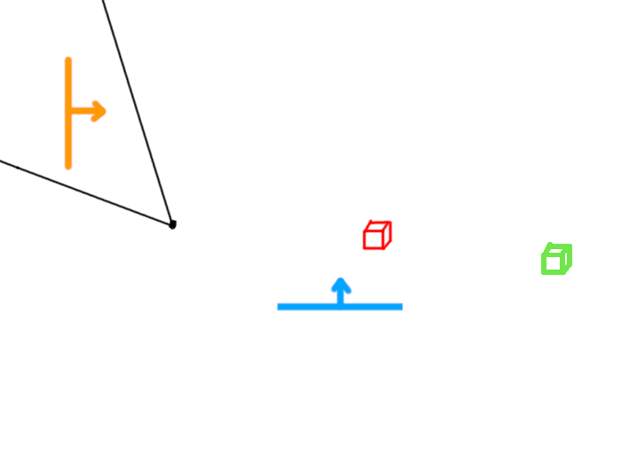
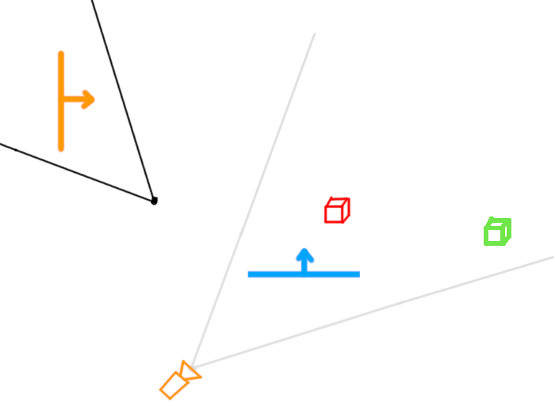
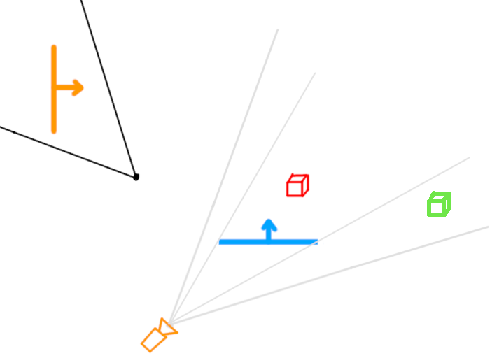
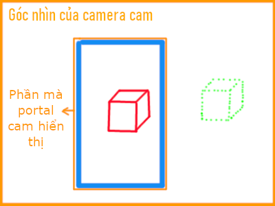
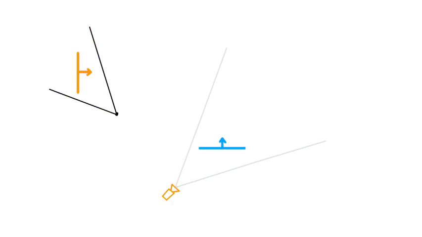

Cách làm Portal mechanic trong HTML Canvas engine
Portal mechanic trong game Portal của Valve là một thứ khá là thú vị và ko kém phần challenging để implement nếu bạn là 1 game dev. Đã có nhiều video về chủ đề này, cái mình thấy hay nhất là của Sebastian Lague. Mình đã viết 1 3D graphics engine (thuật ngữ đúng là cpu rasterizer/software rasterizer) trong HTML Canvas rồi thì sao mình không implement thử Portal mechanic vào nó luôn nhỉ 😳 Đó chính là thứ mà mình hướng đến trong blog này. Nguồn ảnh: gamingbolt, Game: Portal 2 (Valve).
Nguồn ảnh: gamingbolt, Game: Portal 2 (Valve).
Cũng như series blogs Rasterzier, bạn có thể xem diff với phiên bản trước ở nút dưới. OK, trước khi làm gì liên quan tới Portal. Bạn cần phải biết là khi bạn nhìn vào portal, thứ bạn nhìn thấy chỉ là 1 texture hiển thị góc nhìn ở portal bên kia, chứ không thật sự là đang "xuyên không", everything is an illusion. Portal thật ra là 1 quad có texture và có effect viền, that's it, cái magic là ở việc ta hiển thị gì lên texture đó và việc xử lý khi vật thể hoặc player đi qua nó.
Như vậy, trước tiên ta cần tạo một class Quad mới, kế thừa từ Mesh. Cũng đơn giản, ta copy lại mặt back của cube (để pháp tuyến của nó hướng theo trục Z thế giới):
class Quad extends Mesh {
constructor() {
super(Quad.generateInitialTriangles());
}
static generateInitialTriangles() {
let tris = [];
let color = new Color(255, 255, 255);
tris.push(
new Triangle(
[new Vector3(0.5, -0.5, 0), new Vector3(0.5, 0.5, 0), new Vector3(-0.5, 0.5, 0)],
[new Vector2(1, 0), new Vector2(1, 1), new Vector2(0, 1)],
color,
),
);
tris.push(
new Triangle(
[new Vector3(0.5, -0.5, 0), new Vector3(-0.5, 0.5, 0), new Vector3(-0.5, -0.5, 0)],
[new Vector2(1, 0), new Vector2(0, 1), new Vector2(0, 0)],
color,
),
);
return tris;
}
}let quadMesh = new Quad();
...
let portal1 = new GameObject(new Vector3(-3, 3, 0), new Vector3(0, 180, 0), new Vector3(3, 6, 3), new Color(255, 201, 94), quadMesh);
let portal2 = new GameObject(new Vector3(3, 3, 0), new Vector3(0, 180, 0), new Vector3(3, 6, 3), new Color(17, 155, 255), quadMesh);
...
function update(time = performance.now()) {
...
objectTris.push(...portal1.getTransformedTriangles());
objectTris.push(...portal2.getTransformedTriangles());
...
}1. Portal sẽ hiển thị gì?
a. Ý tưởng cơ bản
Bạn hãy thử suy nghĩ với trường hợp như sau:
Ta biết Portal sẽ hiển thị theo kiểu 1 "cửa sổ" với góc nhìn ở portal bên kia. Nghĩa là ta phải giả sử 1 player khác đang đứng đằng sau Portal xanh, player ảo đó thấy cái gì, thì Portal cam sẽ hiển thị cái đó. Với engine chúng ta thì 1 player chỉ là 1 camera, và player ảo này đang phục vụ cho portal cam, nên mình minh họa camera màu cam:



Câu hỏi tiếp theo ta cần trả lời là: Vị trí và góc xoay của camera cam sẽ như thế nào?
Về vị trí, thì bạn nhìn những hình trên cũng sẽ mường tượng được nó sẽ thế nào. Để dễ suy nghĩ, bạn thử kéo cả Portal cam và người chơi tới Portal xanh sao cho Portal cam trùng với portal xanh, như gif dưới đây:

Ngược lại nhưng mà chỉ ngược trục x và z local, chứ không ngược trục y. Cái này mình có thể giải thích theo kiểu này: Khi bạn đi qua portal thì khi qua tới bên kia, độ cao local của bạn vẫn như cũ chứ không có lí do gì mà bị ngược lại.
Về góc xoay thì nó y hệt vị trí, ngược trục x, z local và không ngược trục y.
Về việc tính toán cụ thể, mình vẽ thêm 2 vector đại diện cho vị trí local (màu cyan) và góc xoay local (màu tím):
- Tìm vector cyan ở portal cam (vector từ portal cam đến player)
- Chuyển vector trên từ world thành local của portal cam
- Chuyển vector trên từ local thành world của portal xanh
- Xoay vector trên 180 độ quanh trục y local của portal xanh
- Lấy vị trí portal xanh + vector trên => vị trí camera cam
- Chuyển Quaternion rotation của player từ world thành local của portal cam
- Chuyển Quaternion trên từ local thành world của portal xanh
- Xoay Quaternion trên 180 độ quanh trục y local của portal xanh => rotation của camera cam
b. Implement việc update camera của portal
Oke vẽ vời tưởng tượng các thứ đã đủ, bây giờ ta cần phải hiện thực hóa 🥶 Đầu tiên thì ta thấy là ta cần phải tạo một class riêng cho Portal rồi đấy.Cũng giống như GameObject, class Portal cũng có pos, eulerAngles, scale, color, ngoài ra cần thêm một trường name để sau này dễ phân biệt 2 portal. Trong constructor, ngoài set các thứ truyền vào thì mình còn phải tạo một camera khác của riêng portal đó (như những gì chúng ta đã bàn), và có camera thì cũng cần có thêm một Rasterizer đi kèm. Như vậy thì constructor của class Portal sẽ như sau:
class Portal {
constructor(name, pos, eulerAngles, scale, color) {
this.name = name;
this.pos = pos;
this.rotation = Quaternion.buildQuaternionEuler(eulerAngles);
this.scale = scale;
let portalQuadMesh = new Quad();
this.quad = new GameObject(pos, eulerAngles, scale, color, portalQuadMesh, null);
this.rasterizer = new Rasterizer();
this.camera = new Camera(pos, eulerAngles, 8, 0.2);
}
}runRenderPipeline(objectTris) {
let tris = [];
for (let tri of objectTris) {
let cloneTri = tri.clone(); // clone ra cho an toàn
tris.push(cloneTri);
}
this.rasterizer.clearScreen();
let viewMatPortal = this.camera.getViewMatrix(); // camera của portal này
let visibleTris = [];
for (let tri of tris) {
if (Vector3.dot(tri.getNormal(), Vector3.sub(tri.getCenter(), this.camera.pos)) < 0) {
tri.mulMat4x4(viewMatPortal);
visibleTris.push(...tri.clipAgainstPlane(nearPlane));
}
}
for (let tri of visibleTris) {
tri.mulMat4x4(projectionMatrix);
tri.perspectiveDivide();
}
this.rasterizer.processTriangles(visibleTris);
}- Set reference tới portal kia
- Chuyển 1 vector từ world về local của Portal và ngược lại
- Chuyển 1 rotation từ world về local của Portal và ngược lại
setOtherPortal(otherPortal) {
this.otherPortal = otherPortal;
}Về việc chuyển vector, ở Unity thì có hàm TransformDirection và InverseTransformDirection. Ở engine chúng ta thì có gì?
Thật ra hàm
Quaternion.rotateVector chính là để chuyển từ local ra world. Vì bản chất Quaterninon là một phép xoay, mỗi GameObject có 1 Quaternion rotation,
vai trò của rotation là để xoay mọi vector local thành vector world.Thế là local sang world đã xong, bây giờ world sang local ta cần 1 hàm "inverseRotateVector" nào đó. Và bạn sẽ ngạc nhiên bởi sự đơn giản của nó, rotateVector là \(pvp^*\), thì inverseRotateVector chỉ là \(p^*vp\) 😳 (tbh I don't even know how it works intuitively, let's just use it):
class Quaternion {
...
inverseRotateVector(v) {
const qVec = new Quaternion(0, v.x, v.y, v.z);
const res = Quaternion.multiply(Quaternion.multiply(this.conjugate(), qVec), this);
return new Vector3(res.b, res.c, res.d);
}
...
}Sau cùng là "chuyển rotation từ world về local" và ngược lại, thì ta chỉ cần dùng phép nhân Quaternion:
- Local ra world thì lấy rotation của Portal nhân với rotation player, simple as that.
- World về local thì ta dùng nghịch đảo của rotation của Portal nhân với rotation player, là "áp dụng phép xoay ngược lại của rotation của Portal lên rotation của player". Và như ta đã biết thì nghịch đảo của 1 Quaternion đơn vị chính là liên hợp của Quaternion đó (xem lại blog Quaternion).
Có hết những công cụ đó rồi, thì hàm của chúng ta sẽ như sau (xem lại ý tưởng ở trên và so sánh):
calculateTransformToOtherPortalTransform(position, rotation) {
// Lấy trục y local của portal kia để làm phép xoay 180 độ quanh nó
let otherPortalUp = this.otherPortal.rotation.rotateVector(Vector3.up).normalize();
let rotate180 = Quaternion.buildQuaternionAxisAngle(otherPortalUp, 180);
// 4 dòng này chính là 5 dòng ý tưởng ở trên, dòng cuối mình gộp 2 ý lại
let worldPositionRelativeToThisPortal = Vector3.sub(position, this.pos);
let localPositionRelativeToThisPortal = this.rotation.inverseRotateVector(worldPositionRelativeToThisPortal);
let worldPositionRelativeToOtherPortal = this.otherPortal.rotation.rotateVector(localPositionRelativeToThisPortal);
let newPos = Vector3.add(this.otherPortal.pos, rotate180.rotateVector(worldPositionRelativeToOtherPortal));
// 3 dòng này chính là 3 dòng ý tưởng ở trên
let localRotationRelativeToThisPortal = Quaternion.multiply(this.rotation.conjugate(), rotation);
let worldRotationRelativeToOtherPortal = Quaternion.multiply(this.otherPortal.rotation, localRotationRelativeToThisPortal);
let newRotation = Quaternion.multiply(rotate180, worldRotationRelativeToOtherPortal);
return [newPos, newRotation];
}
updatePortalCameraBaseOnPlayer(playerCameraPos, playerCameraRotation) {
let [cameraPos, cameraRotation] = this.calculateTransformToOtherPortalTransform(playerCameraPos, playerCameraRotation);
this.camera.pos = cameraPos;
this.camera.rotation = cameraRotation;
}Như thế thì nó đã hoạt động đúng rồi, tuy nhiên Portal có camera và rasterizer nhưng không biết nên hiện nó chỗ nào, nên chúng ta tạo tạm 1 canvas để hiện những gì mà camera Portal 1 (cam) thấy:
<canvas id="portal1Canvas" width="400" height="300" style="border: 2px solid #aaa; background: #fff"></canvas>drawCall(canvasCtx = null) {
if (canvasCtx == null)
canvasCtx = ctx;
...
canvasCtx.putImageData(this.imageData, 0, 0);
}const portal1Canvas = document.getElementById("portal1Canvas");
const portal1Ctx = portal1Canvas.getContext("2d");let portal1 = new Portal("Portal 1", new Vector3(-3, 3, 0), new Vector3(0, 180, 0), new Vector3(3, 6, 3), new Color(255, 201, 94));
let portal2 = new Portal("Portal 2", new Vector3(3, 3, 0), new Vector3(0, 180, 0), new Vector3(3, 6, 3), new Color(17, 155, 255));
portal1.setOtherPortal(portal2);
portal2.setOtherPortal(portal1);function update(time = performance.now()) {
...
camera.updateMovement(dt, keyStates);
// update vị trí camera player trước mới update camera của 2 portal
portal1.updatePortalCameraBaseOnPlayer(camera.pos, camera.rotation);
portal2.updatePortalCameraBaseOnPlayer(camera.pos, camera.rotation);
const viewMat = camera.getViewMatrix();
let objectTris = [];
objectTris.push(...ground.getTransformedTriangles());
objectTris.push(...portal1.quad.getTransformedTriangles()); // <-------- thêm .quad
objectTris.push(...portal2.quad.getTransformedTriangles()); // <-------- thêm .quad
portal1.runRenderPipeline(objectTris);
portal2.runRenderPipeline(objectTris);
...
portal1.rasterizer.drawCall(portal1Ctx); // <---------- portal1 drawCall lên portal1Ctx
rasterizer.processTriangles(visibleTris);
rasterizer.drawCall();
requestAnimationFrame(update);
}let playerCubeTexture = new Texture("https://raw.githubusercontent.com/hachihao792001/hachihao792001.github.io/refs/heads/main/blogs/graphics3D/images/textures/wheatly.png");
...
let playerCube = new GameObject(camera.pos, camera.rotation, new Vector3(0.5, 0.5, 0.5), new Color(255, 255, 255),
new ObjMesh("https://raw.githubusercontent.com/hachihao792001/hachihao792001.github.io/refs/heads/main/blogs/graphics3D/models/grass_block.obj"), playerCubeTexture);
...
function update(time = performance.now()) {
...
playerCube.pos = camera.pos;
playerCube.rotation = camera.rotation;
...
}let portal1 = new Portal("Portal 1", new Vector3(-3, 3, -3), new Vector3(0, 180, 0), new Vector3(3, 6, 3), new Color(255, 201, 94));
let portal2 = new Portal("Portal 2", new Vector3(3, 3, -3), new Vector3(0, 180, 0), new Vector3(3, 6, 3), new Color(17, 155, 255));Hiện tại trong hàm update ta có làm những thứ sau:
- Tính delta time, tính fps
- Update vị trí, rotation của mọi object trong thế giới
- Chuẩn bị các triangles của các object ở object space
- Render hình ảnh cho portal
- Đưa các triangles về view space, backface culling, near plane clipping
- Đưa các triangles về clip space (nhân projection matrix và chia z)
- Clear screen, đưa triangles cho rasteriezer xử lí và gọi drawCall
function updateGameObjectTransforms() {
playerCube.pos = camera.pos;
playerCube.rotation = camera.rotation;
camera.updateMovement(dt, keyStates);
portal1.updatePortalCameraBaseOnPlayer(camera.pos, camera.rotation);
portal2.updatePortalCameraBaseOnPlayer(camera.pos, camera.rotation);
}
function gameObjectToObjectSpaceTriangles() {
let objectTris = [];
objectTris.push(...ground.getTransformedTriangles());
objectTris.push(...playerCube.getTransformedTriangles());
objectTris.push(...portal1.quad.getTransformedTriangles());
objectTris.push(...portal2.quad.getTransformedTriangles());
return objectTris;
}
function portalRenderOperations(objectTris) {
portal1.runRenderPipeline(objectTris);
portal2.runRenderPipeline(objectTris);
}
function objectSpaceToViewSpace(objectTris) {
const viewMat = camera.getViewMatrix();
let visibleTris = [];
for (let tri of objectTris) {
if (Vector3.dot(tri.getNormal(), Vector3.sub(tri.getCenter(), camera.pos)) < 0) {
tri.mulMat4x4(viewMat);
visibleTris.push(...tri.clipAgainstPlane(nearPlane));
}
}
return visibleTris;
}
function viewSpaceToClipSpace(visibleTris) {
for (let tri of visibleTris) {
tri.mulMat4x4(projectionMatrix);
tri.perspectiveDivide();
}
}
function rasterize(visibleTris) {
portal1.rasterizer.drawCall(portal1Ctx);
rasterizer.clearScreen();
rasterizer.processClipSpaceTriangles(visibleTris); // đổi tên processTriangles thành processClipSpaceTriangles
rasterizer.drawCall();
}Như vậy hàm update sẽ thành:
function update(time = performance.now()) {
dt = (time - lastTime) / 1000;
lastTime = time;
fpsTimeCounter += dt;
frames++;
if (fpsTimeCounter >= 1) {
fpsInfo.textContent = `FPS: ${frames}`;
frames = 0;
fpsTimeCounter = 0;
}
updateGameObjectTransforms();
let objectTris = gameObjectToObjectSpaceTriangles();
portalRenderOperations(objectTris);
let visibleTris = objectSpaceToViewSpace(objectTris);
viewSpaceToClipSpace(visibleTris);
rasterize(visibleTris);
requestAnimationFrame(update);
}Full code, nhìn lên tí bạn sẽ thấy chính bạn ở canvas của portal 1.
c. Implement việc render lên texture của Portal
Ta đã biết là Portal nên hiển thị gì rồi, đã render được nó ra canvas riêng rồi, giờ là tới lúc thật sự áp cái đó vào texture của Portal.Bạn nhớ lại blog về Texture, với texture bình thường thì với mỗi pixel ta sẽ cần phải tìm tọa độ UV của nó bằng barycentric coords với 3 đỉnh tam giác. Tuy nhiên, texture của portal đơn giản hơn nhiều, tại vì cái mà ta render ở canvas bên dưới khớp hoàn toàn với những gì mà portal sẽ hiển thị, chỉ là được cắt ra thôi. Như vậy với mỗi pixel thì ta lấy lại y hệt tọa độ pixel đó ở canvas bên dưới là xong.
Việc bây giờ cần làm là thay vì rasterize những gì mà camera Portal thấy ra canvas, thì rasterize nó ra một Texture riêng, kỹ thuật này chính là Render Texture trong Unity.
Đầu tiên ta tạo một biến renderTexture trong class Portal, là một texture rỗng có width height bằng với canvas, biến pixels phải có cùng kiểu với ImageData.data là Uint8ClampedArray:
class Portal {
constructor(name, pos, eulerAngles, scale, color) {
...
this.renderTexture = new Texture();
this.renderTexture.width = canvas.width;
this.renderTexture.height = canvas.height;
this.renderTexture.pixels = new Uint8ClampedArray(canvas.width * canvas.height * 4);
...
}
}class Texture {
constructor(url) {
this.pixels = null;
this.width = 0;
this.height = 0;
if (url) this.load(url); // <--------------
}
}class Portal {
...
updateTextureForQuad() {
let index = 0;
for (let y = 0; y < canvas.height; y++) {
for (let x = 0; x < canvas.width; x++) {
const c = this.rasterizer.screenBuffer[y][x];
this.renderTexture.pixels[index++] = c.r;
this.renderTexture.pixels[index++] = c.g;
this.renderTexture.pixels[index++] = c.b;
this.renderTexture.pixels[index++] = 255;
}
}
this.quad.texture = this.renderTexture;
}
...
}
...
function portalRenderOperations(objectTris) {
portal1.runRenderPipeline(objectTris);
portal1.updateTextureForQuad();
portal2.runRenderPipeline(objectTris);
portal2.updateTextureForQuad();
}Nghĩa là, ta phải thêm reference tới Portal ngay từ constructor của tam giác, và các hàm có clone tam giác:
class Triangle {
constructor(vertices = [], uv = [], color = new Color(255, 255, 255), portal = null) {
...
this.portal = portal;
}
clone() {
...
tri.portal = this.portal;
return tri;
}
...
clipAgainstPlane(plane) {
...
if (frontPoints.length == 3) {
outTris.push(this.clone());
} else if (frontPoints.length == 1 && behindPoints.length == 2) {
...
outTri.portal = this.portal;
outTris.push(outTri);
} else if (frontPoints.length == 2 && behindPoints.length == 1) {
...
outTri1.portal = this.portal;
outTris.push(outTri1);
...
outTri2.portal = this.portal;
outTris.push(outTri2);
}
return outTris;
}class Quad extends Mesh {
constructor(portal = null) {
super(Quad.generateInitialTriangles(portal)); // <-------------------
}
static generateInitialTriangles(portal) {
let tris = [];
let color = new Color(255, 255, 255);
tris.push(
new Triangle(
[new Vector3(0.5, -0.5, 0), new Vector3(0.5, 0.5, 0), new Vector3(-0.5, 0.5, 0)],
[new Vector2(1, 0), new Vector2(1, 1), new Vector2(0, 1)],
color, portal // <-------------------
),
);
tris.push(
new Triangle(
[new Vector3(0.5, -0.5, 0), new Vector3(-0.5, 0.5, 0), new Vector3(-0.5, -0.5, 0)],
[new Vector2(1, 0), new Vector2(0, 1), new Vector2(0, 0)],
color, portal // <-------------------
),
);
return tris;
}
}this:
class Portal {
constructor(name, pos, eulerAngles, scale, color) {
...
let portalQuadMesh = new Quad(this);
this.quad = new GameObject(pos, eulerAngles, scale, color, portalQuadMesh, null);
...
}
...
}processClipSpaceTriangles(tris) {
...
if (tri.texture && tri.texture.pixels) {
if (tri.portal) {
lightIntensity = 1; // ánh sáng không tác động lên portal
const texIndex = (y * tri.texture.width + x) * 4;
texColor = new Color(tri.texture.pixels[texIndex], tri.texture.pixels[texIndex + 1], tri.texture.pixels[texIndex + 2]);
} else {
... // đoạn code tính theo barycentric coords cũ
}
}
...
}Cái này mình quy định sớm luôn, có 4 cái cạnh này thì mình đẩy 4 cạnh này về sau sao cho cái quad portal khớp với viền trước, còn quad đằng sau sẽ đẩy ra khớp với viền sau (hope that make sense):
class Portal {
constructor(name, pos, eulerAngles, scale, color) {
...
let portalEdgeThickness = 0.2;
let portalBack = this.rotation.rotateVector(Vector3.back).normalize(); // nhớ thêm Vector3.back, trước giờ ko có 😅
let backOffset = Vector3.mul(portalBack, portalEdgeThickness / 2); // offset để đẩy 4 cạnh về sau, 1 nửa thickness
let portalUp = this.rotation.rotateVector(Vector3.up);
let portalForward = this.rotation.rotateVector(Vector3.forward).normalize();
let portalRight = this.rotation.rotateVector(Vector3.right);
this.topCube = new GameObject(
Vector3.add(pos, Vector3.add(Vector3.mul(portalUp, this.scale.y / 2 + portalEdgeThickness / 2), backOffset)),
eulerAngles,
new Vector3(scale.x, portalEdgeThickness, portalEdgeThickness),
color,
cubeMesh,
);
this.bottomCube = new GameObject(
Vector3.add(pos, Vector3.add(Vector3.mul(portalUp, -this.scale.y / 2 - portalEdgeThickness / 2), backOffset)),
eulerAngles,
new Vector3(scale.x, portalEdgeThickness, portalEdgeThickness),
color,
cubeMesh,
);
this.leftCube = new GameObject(
Vector3.add(pos, Vector3.add(Vector3.mul(portalRight, -this.scale.x / 2 - portalEdgeThickness / 2), backOffset)),
eulerAngles,
new Vector3(portalEdgeThickness, scale.y + portalEdgeThickness * 2, portalEdgeThickness),
color,
cubeMesh,
);
this.rightCube = new GameObject(
Vector3.add(pos, Vector3.add(Vector3.mul(portalRight, this.scale.x / 2 + portalEdgeThickness / 2), backOffset)),
eulerAngles,
new Vector3(portalEdgeThickness, scale.y + portalEdgeThickness * 2, portalEdgeThickness),
color,
cubeMesh,
);
let normalQuadMesh = new Quad();
this.backQuad = new GameObject(
Vector3.add(pos, Vector3.mul(portalBack, portalEdgeThickness)),
eulerAngles,
new Vector3(scale.x, scale.y, 0.05),
color,
normalQuadMesh,
);
// làm cái quad bình thường rồi xoay ngược lại 180 độ theo chiều y local
this.backQuad.rotation = Quaternion.multiply(Quaternion.buildQuaternionAxisAngle(portalUp, 180), this.backQuad.rotation);
}class Portal {
...
getAllTransformedTriangles() {
let allTris = [];
allTris.push(...this.quad.getTransformedTriangles());
allTris.push(...this.topCube.getTransformedTriangles());
allTris.push(...this.bottomCube.getTransformedTriangles());
allTris.push(...this.leftCube.getTransformedTriangles());
allTris.push(...this.rightCube.getTransformedTriangles());
allTris.push(...this.backQuad.getTransformedTriangles());
return allTris;
}
...
}
...
function gameObjectToObjectSpaceTriangles() {
let objectTris = [];
objectTris.push(...ground.getTransformedTriangles());
objectTris.push(...playerCube.getTransformedTriangles());
objectTris.push(...portal1.getAllTransformedTriangles());
objectTris.push(...portal2.getAllTransformedTriangles());
return objectTris;
}Cái này khá đơn giản, chỉ cần thêm 1 lần gọi clipAgainstPlane với plane của portal kia. Ta thêm hàm để tìm plane khớp với Portal, tuy nhiên nên lùi cái plane lại 1 tí vì nó sẽ clip luôn với cái quad của portal:
class Portal {
...
getPlane() {
let forward = this.rotation.rotateVector(Vector3.forward);
return new Plane(forward, Vector3.sub(this.pos, Vector3.mul(forward, 0.01)));
}
runRenderPipeline(objectTris) {
...
let viewMatPortal = this.camera.getViewMatrix();
let otherPortalPlane = this.otherPortal.getPlane(); // <---------------
let visibleTris = [];
for (let tri of tris) {
if (Vector3.dot(tri.getNormal(), Vector3.sub(tri.getCenter(), this.camera.pos)) < 0) {
let clippedWithPortalTris = tri.clipAgainstPlane(otherPortalPlane); // <--------------
for (let clippedTri of clippedWithPortalTris) {
clippedTri.mulMat4x4(viewMatPortal);
visibleTris.push(...clippedTri.clipAgainstPlane(nearPlane));
}
}
}
...
}
}